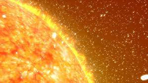
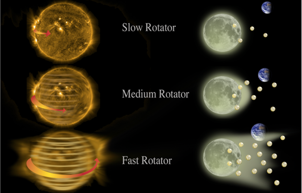

SUN
The sun lies at the heart of the solar system, where it is by far the largest object. It holds 99.8% of the solar system's mass and is roughly 109 times the diameter of the Earth — about one million Earths could fit inside the sun.
The surface of the sun is about 10,000 degrees Fahrenheit (5,500 degrees Celsius) hot, while temperatures in the core reach more than 27 million F (15 million C), driven by nuclear reactions. One would need to explode 100 billion tons of dynamite every second to match the energy produced by the sun, according to NASA.

The sun is one of more than 100 billion stars in the Milky Way. It orbits some 25,000 light-years from the galactic core, completing a revolution once every 250 million years or so. The sun is relatively young, part of a generation of stars known as Population I, which are relatively rich in elements heavier than helium. An older generation of stars is called Population II, and an earlier generation of Population III may have existed, although no members of this generation are known yet.The sun was born about 4.6 billion years ago. Many scientists think the sun and the rest of the solar system formed from a giant, rotating cloud of gas and dust known as the solar nebula. As the nebula collapsed because of its gravity, it spun faster and flattened into a disk. Most of the material was pulled toward the center to form the sun.
Related: How was the sun formed?
The sun has enough nuclear fuel to stay much as it is now for another 5 billion years. After that, it will swell to become a red giant. Eventually, it will shed its outer layers, and the remaining core will collapse to become a white dwarf. Slowly, the white dwarf will fade, and will enter its final phase as a dim, cool theoretical object sometimes known as a black dwarf.
The sun and the atmosphere of the sun are divided into several zones and layers. The solar interior, from the inside out, is made up of the core, radiative zone and the convective zone. The solar atmosphere above that consists of the photosphere, chromosphere, a transition region and the corona. Beyond that is the solar wind, an outflow of gas from the corona.
Advertisement
The core extends from the sun's center to about a quarter of the way to its surface. Although it only makes up roughly 2% of the sun's volume, it is almost 15 times the density of lead and holds nearly half of the sun's mass. Next is the radiative zone, which extends from the core to 70% of the way to the sun's surface, making up 32 % of the sun's volume and 48% of its mass. Light from the core gets scattered in this zone, so that a single photon often may take a million years to pass through.
The convection zone reaches up to the sun's surface, and makes up 66% of the sun's volume but only a little more than 2% of its mass. Roiling "convection cells" of gas dominate this zone. Two main kinds of solar convection cells exist — granulation cells about 600 miles (1,000 kilometers) wide and supergranulation cells about 20,000 miles (30,000 km) in diameter.
The photosphere is the lowest layer of the sun's atmosphere, and emits the light we see. It is about 300 miles (500 km) thick, although most of the light comes from its lowest third. Temperatures in the photosphere range from 11,000 F (6,125 C) at the bottom to 7,460 F (4,125 C) at the top. Next up is the chromosphere, which is hotter, up to 35,500 F (19,725 C), and is apparently made up entirely of spiky structures known as spicules typically some 600 miles (1,000 km) across and up to 6,000 miles (10,000 km) high.